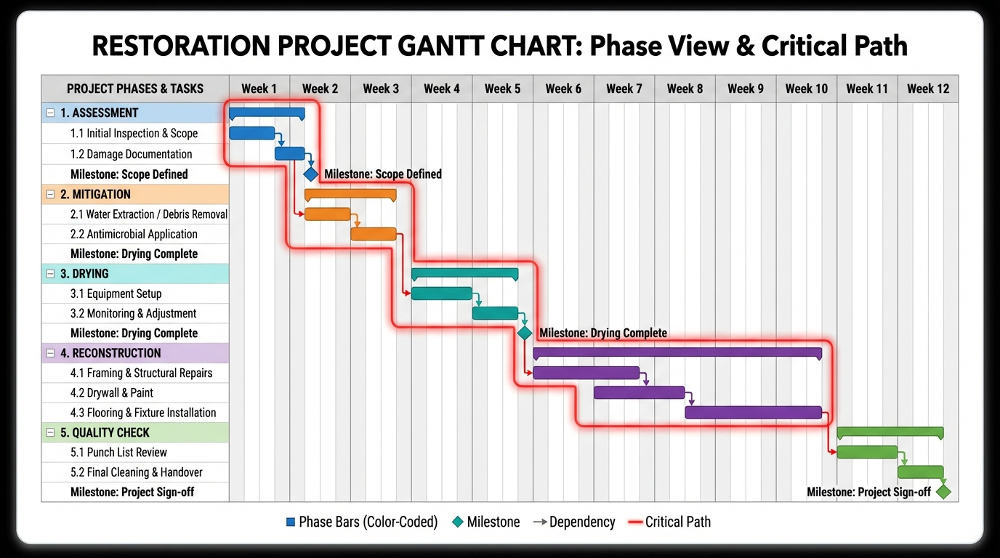
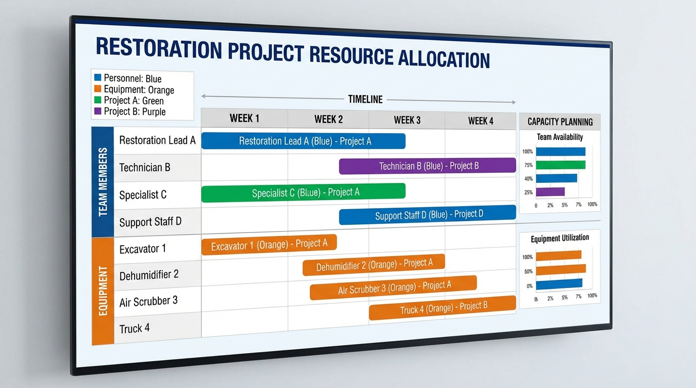
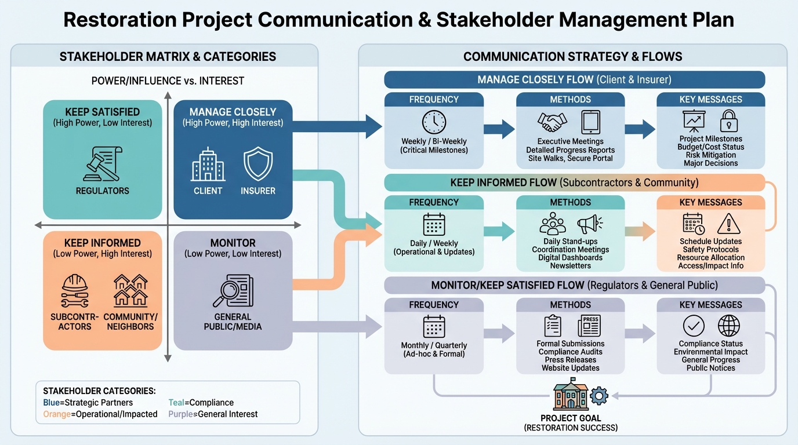
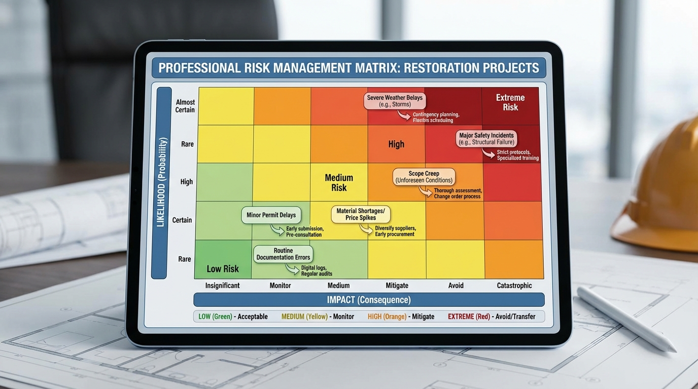
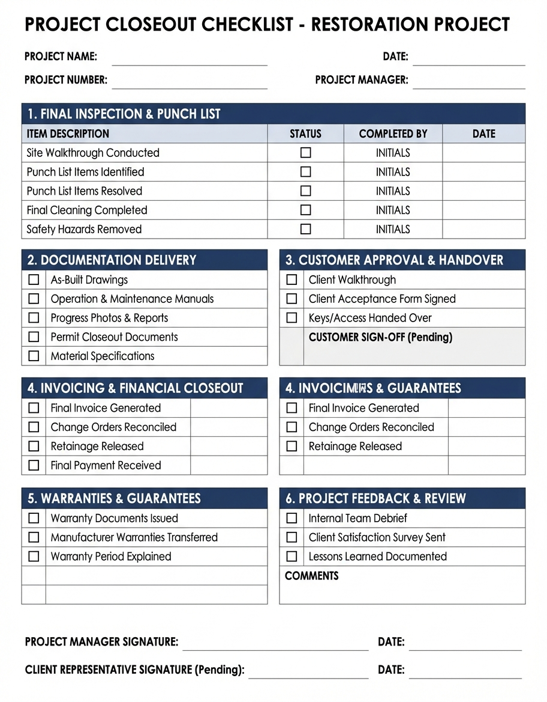

Master the CEC Requirements, Earning Methods & Annual Renewal Process
Duration: 35 minutes | Assessment: 10 questions | Category: Professional Development
This comprehensive module covers the Continual Education Credits (CEC) system required for maintaining IICRC certifications in Australia. Learn how to earn credits through the DR-NRPG platform, track your progress, meet annual renewal requirements, and maintain your professional standing with IICRC Australia.
The Institute of Inspection, Cleaning and Restoration Certification (IICRC Australia) requires all certified professionals to complete 10 Continual Education Credits annually per active certification to maintain their professional status.
Source: iicrc.org.au/continuing-education
Policy Effective: 1 January 2024
Review Cycle: Annually
Compliance: Mandatory for all Australian IICRC certified professionals
| IICRC Certification | Annual CEC Required | Renewal Period | Grace Period |
|---|---|---|---|
| WRT Water Restoration Technician | 10 CEC | 12 months from issue date | 30 days |
| ASD Applied Structural Drying | 10 CEC | 12 months from issue date | 30 days |
| AMRT Applied Microbial Remediation | 10 CEC | 12 months from issue date | 30 days |
| FSRT Fire & Smoke Restoration | 10 CEC | 12 months from issue date | 30 days |
| CCT Carpet Cleaning Technician | 10 CEC | 12 months from issue date | 30 days |
| MASTER Master Certifications | 15 CEC | 12 months from issue date | 30 days |
Important: If you hold multiple certifications, CEC credits can be shared across all certifications. You do NOT need 10 CEC per certification - 10 CEC total covers all certifications held.
Example: Hold WRT + ASD + AMRT? You need 10 CEC total (not 30 CEC).
Exception: Master certifications require 15 CEC regardless of other certifications held.
Complete NRPG training modules through the DR-NRPG platform. Each module awards CEC credits based on duration and assessment performance.
| Module Duration | Assessment Score | CEC Credits Awarded | Example Modules |
|---|---|---|---|
| 30-45 minutes | 80%+ pass | 1.0 CEC | NRP-001, NRP-002, NRP-015 |
| 60-90 minutes | 80%+ pass | 1.5 CEC | NRP-003, NRP-006, NRP-007 |
| 120+ minutes | 80%+ pass | 2.0 CEC | NRP-012, NRP-017, NRP-020 |
| Any duration | 95%+ excellent | +0.5 CEC bonus | All modules eligible |
Total CEC Available: All 24 NRPG modules combined offer approximately 32 CEC credits, significantly exceeding the annual 10 CEC requirement.
DR-NRPG hosts monthly live webinars covering industry updates, new techniques, Australian standards changes, and case studies.
Registration: All webinars and events available through dashboard Events section. Automatic CEC credit upon attendance verification.
Attend in-person training sessions hosted by DR-NRPG partners and IICRC Australia approved instructors.
Verification: Upload attendance certificate through dashboard to receive CEC credit. Processing time: 2-5 business days.
Contribute to the restoration industry through published content and educational materials.
Submission: Email content@disasterrecovery.com.au with your contribution for review and CEC approval.
The DR-NRPG platform provides comprehensive CEC tracking integrated with your IICRC Australia certification status.
✅ On track to meet your 10 CEC requirement. Complete 2 more modules (3.5 CEC) to reach your goal.
IICRC certifications must be renewed annually based on your original issue date. The DR-NRPG platform automates most of the renewal process when you maintain your CEC requirements.
| Step | Action | Timeline | Status |
|---|---|---|---|
| 1 | Complete 10 CEC credits during certification period | Throughout year | Self-managed |
| 2 | Receive 90-day renewal reminder notification | 3 months before expiry | Automated |
| 3 | Review CEC progress in dashboard | As needed | Self-service |
| 4 | Complete any remaining CEC requirements | Before 30-day deadline | Self-managed |
| 5 | Platform submits CEC report to IICRC Australia | 30 days before expiry | Automated |
| 6 | Pay renewal fee to IICRC Australia | Within 30-day grace period | Direct with IICRC |
| 7 | Receive updated certification card | 7-14 days after payment | IICRC processes |
| 8 | Upload new certification to DR-NRPG profile | Upon receipt | Self-managed |
Single Certification: $165 AUD + GST per year
Multiple Certifications: $165 for first + $110 each additional per year
Master Certification: $275 AUD + GST per year
Late Renewal (within grace period): +$55 late fee
Lapsed Certification (after grace period): Must retake full course
IICRC Australia recognises CEC credits from approved education providers. The DR-NRPG platform is an IICRC Australia Approved Education Provider (AEP) as of January 2024.
| Provider Type | Approval Status | Verification Required | Processing Time |
|---|---|---|---|
| DR-NRPG Platform Modules | ✅ Pre-approved | None (automatic) | Instant |
| IICRC Australia Official Courses | ✅ Pre-approved | Upload certificate | 2-5 business days |
| RIA (Restoration Industry Assoc) | ✅ Pre-approved | Upload certificate | 2-5 business days |
| CARSI Training Events | ✅ Pre-approved | Upload certificate | 2-5 business days |
| Equipment Manufacturer Training | ⚠️ Case-by-case approval | Upload certificate + agenda | 5-10 business days |
| State Association Events | ⚠️ Case-by-case approval | Upload certificate + agenda | 5-10 business days |
| Online Courses (non-IICRC) | ⚠️ Requires approval | Full course details + certificate | 10-15 business days |
Step 1: Log into DR-NRPG dashboard → Training Centre → "Submit External CEC"
Step 2: Upload attendance certificate (PDF format, max 5MB)
Step 3: Upload course agenda or outline (if not pre-approved provider)
Step 4: Select relevant IICRC certification(s)
Step 5: Submit for review - receive email notification when processed
To complete this module and earn 1.0 CEC, you must pass the 10-question assessment with a score of 80% or higher.
The assessment covers:
Complete this assessment to earn your 1.0 CEC credit for NRP-022.
© 2026 DR-NRPG Platform | IICRC Australia Approved Education Provider #AEP-2024-AU-0147
Australian-owned and operated | Compliance with IICRC Australia continuing education standards